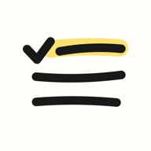

This week
Questions, problems or ideas? Write to
erencopcu@gmail.com.
How does the board work?
- + next to “This week” writes something for any day this week, with how many times you'd like to do it. Tap one of its boxes when it happens: it lands on today.
- + write under a day adds notes; return keeps the keyboard open for the next one.
- Tap a note to check it. Hold it to edit, move or remove it. Hold and drag it onto another day. Swipe left to remove it. Every removal can be undone from the note that appears at the bottom.
- ‹ › next to the dates show last week (read-only) and next week (to plan ahead). past weeks opens a calendar.
- The sticky note is your shopping list. It carries on from week to week; bought items are cleared when a new week starts.
What happens on Monday?
You get a clean board. If last week had intentions or unchecked notes, the app asks which ones to bring back. Last week stays in past weeks.
Where is my data? Can I move it to a new phone?
Everything is stored on your iPhone only. It moves to a new phone with an iCloud or computer backup restore, like other app data. You can also share any board or the shopping list as text from the ••• menu.
How do I start over?
••• → “Clear this board” clears the board on screen (with undo). ••• → “Erase all data” removes every week and the shopping list.
Destek
Soru, sorun ya da fikir için:
erencopcu@gmail.com
- “Bu hafta” yanındaki + haftanın herhangi bir günü için bir şey yazar; kaç kere yapmak istediğini seçersin. Olduğunda kutusuna dokun, bugünün altına düşer.
- Bir notu işaretlemek için dokun, düzenlemek, taşımak veya silmek için basılı tut, başka güne taşımak için basılı tutup sürükle, silmek için sola kaydır. Her silme geri alınabilir.
- ‹ › geçen haftayı (sadece okunur) ve gelecek haftayı (önceden planlama) gösterir. geçmiş haftalar bir takvim açar.
- Yapışkan not alışveriş listendir; haftadan haftaya devam eder, yeni hafta başlarken alınanlar temizlenir.
- Verilerin yalnızca iPhone'unda saklanır; iCloud veya bilgisayar yedeğiyle yeni telefona taşınır. ••• menüsünden tahtayı ya da alışveriş listesini metin olarak paylaşabilirsin.